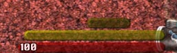

Survival Guide #1299
This is the abridged version. Marine, keep this guide with you always in case you suddenly find yourself shipwrecked on a hostile planet!
What to do when stranded on an alien planet?
The first thing to do is to check your immediate surroundings for anything useful, and to
find out what necessary survival gear you already have. Collect everything you find by
right clicking the items.
Character classes
Marines are chosen from four species: The very rare Humans, the common Aliens, the manufactured Androids, and the mysterious Psionics.
- Humans
-Weak and fragile. Easily hurt by cold and heat. Best suited for suicide missions. - Aliens
-Compared to humans are faster and stronger. The only drawback is that they cannot wear weapons, and must only use their claws. - Androids
-Very high resistance to both damage and temperature. They do not require food to survive, but constantly use battery energy to operate. - Psionics
-These weird little critters use their mind to attack and command their enemies. Their bright mind illuminates their surroundings.
The meters
|  |
Body Temperature
Food
Health |
Weapon use
|
Battery
Tazor |
Item use
|
Using items
Combining items
Item Weight |
Slots

|
Slot system
Energy Usage |
Additional Controls
- Mouse left to shoot
- Mouse right to pick up
- J for journal
- I for inventory
- Mouse wheel or E to change weapon
- F12 to quicksave, F9 to quickload
- P to pause.